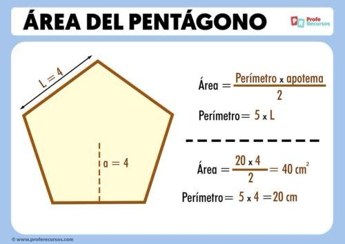

Un pentágono es una figura geométrica plana que tiene cinco lados y cinco vértices. Cuando todos sus lados y ángulos son iguales, se llama pentágono regular. Los pentágonos son comunes tanto en la naturaleza como en la arquitectura.
Ejemplos
P = 5 × Ldonde L es la longitud del lado.
A = (5 × L × a) / 2donde L es el lado y a es el apotema.
a = L / (2 × tan(π/5))
Esto calcula el apotema usando trigonometría.